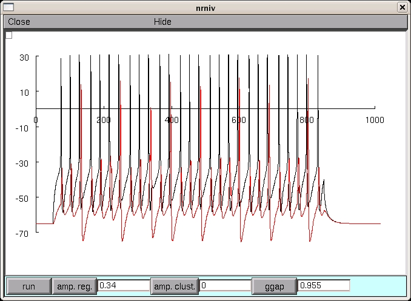

NEURON mod files from the paper: Federico Minneci, Mahyar Janahmadi, Michele Migliore, Natasa Dragicevic, Daniela Avossa, and Enrico Cherubini, Signaling properties of stratum oriens interneurons in the hippocampus of transgenic mice expressing EGFP in a subset of somatostatin-containing cells, Hippocampus 17:538-553 (2007). The simulation file can be used to reproduce the traces in Fig.10c of the paper, modeling the effects of electrical coupling between cells with various firing patterns. In the simulation window, "amp. reg" and "amp.clust." are the amplitude of the current injection in the regular or cluster type of interneuron, respectively. ggap is the gap junctional conductance of each gap junction. The default values of the parameters reproduce the middle trace in Fig.10c Under unix systems: to compile the mod files use the command nrnivmodl and run the simulation hoc file with the command nrngui forfig-10c.hoc Under Windows systems: to compile the mod files use the "mknrndll" command. A double click on the simulation file forfig-10c.hoc will open the simulation window. Running the model in the default setting displays:  Questions on how to use this model should be directed to michele.migliore@pa.ibf.cnr.it